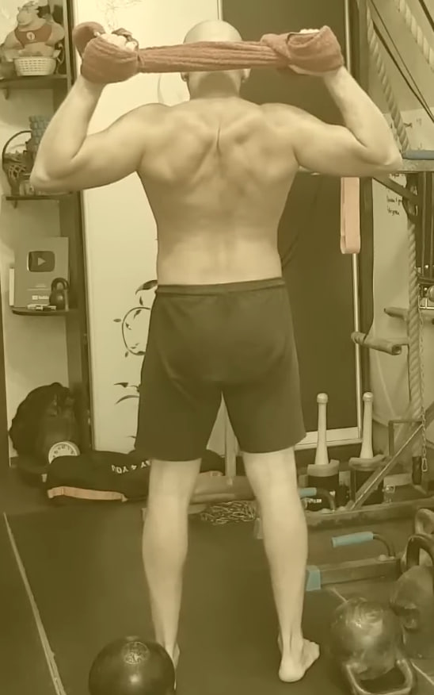
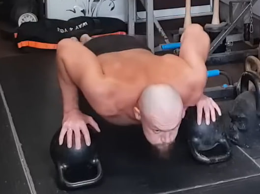
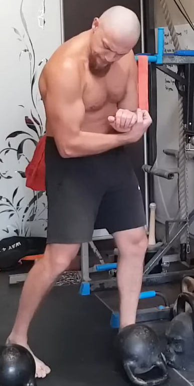
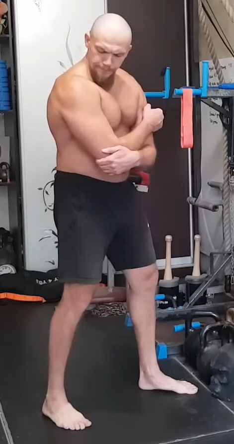

Día 2: isometría y control + core (abdomen y zona media) (sin equipo)
Hoy trabajamos isometría y control, core (abdomen y zona media), cardio y capacidad pulmonar con ejercicios simples que caben en una habitación. El objetivo es construir fuerza útil, resistencia y control corporal con el mínimo de equipo.
Prioriza la técnica, respira con control y acumula consistencia: incluso una sesión corta suma cuando la repites día tras día.
1. Rotura en tres puntos con toalla
Antes de empezar: haz el calentamiento y repasa la respiración. (No lo saltes.)
Protocolo isométrico: tensión: 12 s + descanso: hasta recuperar la respiración × 10 repeticiones (por lado, si aplica). Más detalles: Respiración.



Utiliza una toalla, cinturón de kimono o cinta que no se estire . Trabajarás en tres posiciones: con los brazos al frente a la altura del pecho, por encima de la cabeza y abajo frente a los muslos. En cada posición intenta “romper” la toalla tirando con la máxima fuerza hacia los lados. Pasa enseguida a la siguiente posición. Las tres posiciones consecutivas cuentan como un ciclo. Enrolla el material en las muñecas dejando unos 46 cm de distancia entre las manos. Completa 10 ciclos.
2. Flexiones lentas con tempo 4–1

Realiza flexiones con las manos elevadas sobre kettlebells, libros o directamente desde el suelo. Baja el cuerpo en 4 segundos con control total y sube en 1 segundo de forma explosiva. Mantén el cuerpo en una línea recta desde la cabeza hasta los talones. Completa 10 repeticiones con el mismo ritmo.
3. Bíceps isométrico con brazo casi extendido
Protocolo isométrico: tensión: 12 s + descanso: hasta recuperar la respiración × 10 repeticiones (por lado, si aplica). Más detalles: Respiración.

Coloca el brazo de trabajo casi completamente extendido hacia abajo, dejando un pequeño ángulo en el codo. Con la otra mano sujeta el antebrazo o la muñeca y tira hacia abajo mientras el brazo de trabajo intenta flexionarse hacia arriba. Mantén una tensión fuerte en el bíceps durante unos segundos y luego suelta. Realiza 10 repeticiones por brazo.
4. Bíceps isométrico a 90 grados
Protocolo isométrico: tensión: 12 s + descanso: hasta recuperar la respiración × 10 repeticiones (por lado, si aplica). Más detalles: Respiración.

Flexiona el brazo de trabajo a unos 90 grados delante del cuerpo. Con la otra mano agarra la muñeca o el puño y empuja en dirección contraria. El brazo de trabajo intenta seguir flexionándose mientras la mano de apoyo no le permite moverse. Mantén la tensión estática en el bíceps durante varios segundos y repite hasta completar 10 repeticiones por lado.
5. Elevación frontal con silla

Sujeta una silla por las patas y extiende los brazos al frente a la altura del pecho o un poco más arriba. Desde ahí, mantén los brazos completamente rectos, sosteniendo el peso de la silla durante 10 segundos y luego bájala lentamente sin doblar los codos. Haz 10 repeticiones de 10 segundos cada una.
6. Isometría "abrazo del codo" para la escápula
Protocolo isométrico: tensión: 12 s + descanso: hasta recuperar la respiración × 10 repeticiones (por lado, si aplica). Más detalles: Respiración.

Cruza el brazo de trabajo frente al cuerpo y abrázalo por el codo o el antebrazo con la otra mano. El brazo de trabajo intenta llevar el codo hacia atrás y hacia afuera mientras la mano que abraza no le deja moverse. Se crea una isometría intensa en la escápula, el deltoide posterior y la parte alta de la espalda. Mantén la tensión unos segundos y repite hasta completar 10 repeticiones por lado.
7. Saltos en posición de plancha


Comienza en posición de plancha con los brazos extendidos. Desde ahí, salta llevando los pies hacia adelante debajo del pecho y vuelve atrás a la plancha con otro salto. Mantén el abdomen firme y evita que la cadera se hunda. Realiza 10 saltos seguidos con un ritmo elástico y continuo.
8. Saltos estrella desde sentadilla
Seguridad en sentadillas: mantén los talones apoyados y el peso en el medio del pie. Las rodillas deben seguir la dirección de los dedos (sin colapsar hacia adentro). Si eres principiante o sientes molestias, evita que las rodillas se adelanten demasiado y piensa en “caderas atrás” para proteger la articulación.


Parte desde una sentadilla profunda con las manos cerca del suelo. Desde la parte baja, realiza un salto explosivo hacia arriba abriendo brazos y piernas en forma de estrella. Aterriza suave, vuelve inmediatamente a la sentadilla profunda y repite. Completa 10 repeticiones sin pausas, manteniendo el mismo ritmo.
Cierre
Experimenta: ajusta ángulos, rango y puntos de tensión hasta encontrar la versión que te sienta bien. Lo importante es que el entrenamiento sea sostenible y te dé ganas de volver. Crea condiciones para entrenar con regularidad, aunque sea poco: 10 minutos cuentan. Esta rutina está pensada para eso: que puedas cumplir incluso con poco espacio, poco tiempo y circunstancias difíciles.